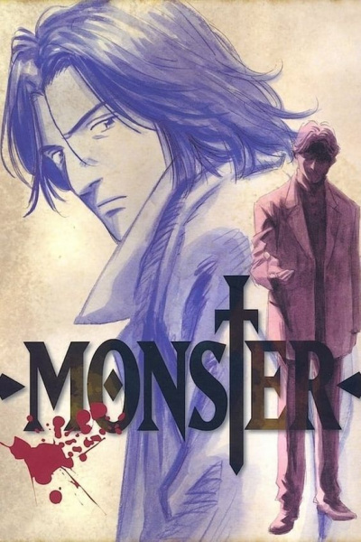
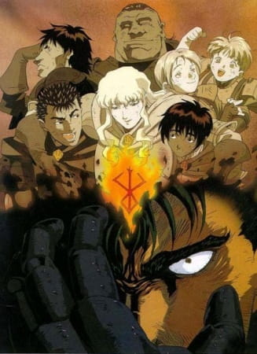

Anime to Watch - My Personal Recommendations
Cowboy Bepop

Rating: 10/10 - Masterpiece
Where to Watch: Crunchyroll, Hulu, Tubi
Crime is timeless. By the year 2071, humanity has expanded across the galaxy, filling the surface of other planets with settlements like those on Earth. These new societies are plagued by murder, drug use, and theft, and intergalactic outlaws are hunted by a growing number of tough bounty hunters.
Spike Spiegel and Jet Black pursue criminals throughout space to make a humble living. Beneath his goofy and aloof demeanor, Spike is haunted by the weight of his violent past. Meanwhile, Jet manages his own troubled memories while taking care of Spike and the Bebop, their ship. The duo is joined by the beautiful con artist Faye Valentine, odd child Edward Wong Hau Pepelu Tivrusky IV, and Ein, a bioengineered Welsh Corgi.
While developing bonds and working to catch a colorful cast of criminals, the Bebop crew's lives are disrupted by a menace from Spike's past. As a rival's maniacal plot continues to unravel, Spike must choose between life with his newfound family or revenge for his old wounds.
Monster

Rating: 10/10 - Masterpiece
Where to Watch: Netflix
Dr. Kenzou Tenma, an elite neurosurgeon recently engaged to his hospital director's daughter, is well on his way to ascending the hospital hierarchy. That is until one night, a seemingly small event changes Dr. Tenma's life forever. While preparing to perform surgery on someone, he gets a call from the hospital director telling him to switch patients and instead perform life-saving brain surgery on a famous performer. His fellow doctors, fiancée, and the hospital director applaud his accomplishment; but because of the switch, a poor immigrant worker is dead, causing Dr. Tenma to have a crisis of conscience.
So when a similar situation arises, Dr. Tenma stands his ground and chooses to perform surgery on the young boy Johan Liebert instead of the town's mayor. Unfortunately, this choice leads to serious ramifications for Dr. Tenma—losing his social standing being one of them. However, with the mysterious death of the director and two other doctors, Dr. Tenma's position is restored. With no evidence to convict him, he is released and goes on to attain the position of hospital director.
Nine years later when Dr. Tenma saves the life of a criminal, his past comes back to haunt him—once again, he comes face to face with the monster he operated on. He must now embark on a quest of pursuit to make amends for the havoc spread by the one he saved.
Berserk

Rating: 10/10 - Masterpiece
Where to Watch: Netflix [Movies], Crunchyroll & Amazon Prime [Show]
Guts, a man who will one day be known as the Black Swordsman, is a young traveling mercenary characterized by the large greatsword he carries. He accepts jobs that offer the most money, but he never stays with one group for long—until he encounters the Band of the Falcon. Ambushed after completing a job, Guts crushes many of its members in combat. Griffith, The Band of the Falcon's leader and founder, takes an interest in Guts and duels him. While the others are no match for Guts, Griffith defeats him in one blow.
Incapacitated and taken into the Band of the Falcon's camp to recover, Guts wakes up two days later. He confronts Griffith, and the two duel yet again, only this time with a condition: Guts will join the Band of the Falcon if he loses. Due to his fresh injuries, Guts loses the fight and is inducted by Griffith.
In three years' time, Guts has become one of the Band of the Falcon's commanders. On the battlefield, his combat prowess is second only to Griffith as he takes on large groups of enemies all on his own. With Guts' immense strength and Griffith's leadership, the Band of the Falcon dominate every battle they partake in. But something menacing lurks in the shadows, threatening to change Guts' life forever.
Initial D

Rating: 10/10 - Masterpiece
Where to Watch: Crunchyroll, Hulu, Amazon Prime
Unlike his friends, Takumi Fujiwara is not particularly interested in cars, with little to no knowledge about the world of car enthusiasts and street racers. The son of a tofu shop owner, he is tasked to deliver tofu every morning without fail, driving along the mountain of Akina. Thus, conversations regarding cars or driving in general would only remind Takumi of the tiring daily routine forced upon him.
One night, the Akagi Red Suns, an infamous team of street racers, visit the town of Akina to challenge the local mountain pass. Led by their two aces, Ryousuke and Keisuke Takahashi, the Red Suns plan to conquer every racing course in Kanto, establishing themselves as the fastest crew in the region. However, much to their disbelief, one of their aces is overtaken by an old Toyota AE86 during a drive back home from Akina. After the incident, the Takahashi brothers are cautious of a mysterious driver geared with remarkable technique and experience in the local roads—the AE86 of Mount Akina.
Samurai Champloo

Rating: 10/10 - Masterpiece
Where to Watch: Hulu & Amazon Prime
Fuu Kasumi is a young and clumsy waitress who spends her days peacefully working in a small teahouse. That is, until she accidentally spills a drink all over one of her customers! With a group of samurai now incessantly harassing her, Fuu desperately calls upon another samurai in the shop, Mugen, who quickly defeats them with his wild fighting technique, utilizing movements reminiscent to that of breakdancing. Unfortunately, Mugen decides to pick a fight with the unwilling ronin Jin, who wields a more precise and traditional style of swordfighting, and the latter proves to be a formidable opponent. The only problem is, they end up destroying the entire shop as well as accidentally killing the local magistrate's son.
For their crime, the two samurai are captured and set to be executed. However, they are rescued by Fuu, who hires the duo as her bodyguards. Though she no longer has a place to return to, the former waitress wishes to find a certain samurai who smells of sunflowers and enlists the help of the now exonerated pair to do so. Despite initially disapproving of this idea, the two eventually agree to assist the girl in her quest; thus, the trio embark upon an adventure to find this mysterious warrior—that is, if Fuu can keep Mugen and Jin from killing each other.
Set in an alternate Edo Period of Japan, Samurai Champloo follows the journey of these three eccentric individuals in an epic quest full of action, comedy, and dynamic sword fighting, all set to the beat of a unique hip-hop infused soundtrack.
Dragon Ball

Rating: 10/10 - Masterpiece
Where to Watch: Crunchyroll, Hulu, Amazon Prime
Goku is a young boy who lives in the woods all alone—that is, until a girl named Bulma runs into him in her search for a set of magical objects called the "Dragon Balls." Since the artifacts are said to grant one wish to whoever collects all seven, Bulma hopes to gather them and wish for a perfect boyfriend. Gokuu happens to be in possession of a dragon ball, but unfortunately for Bulma, he refuses to part ways with it, so she makes him a deal: he can tag along on her journey if he lets her borrow the dragon ball's power. With that, the two set off on the journey of a lifetime.
They don't go on the journey alone. On the way, they meet the old Muten-Roshi and wannabe disciple Kuririn, with whom Gokuu trains to become a stronger martial artist for the upcoming World Martial Arts Tournament. However, it's not all fun and games; the ability to make any wish come true is a powerful one, and there are others who would do much worse than just wishing for a boyfriend. To stop those who would try to abuse the legendary power, they train to become stronger fighters, using their newfound strength to help the people around them along the way.